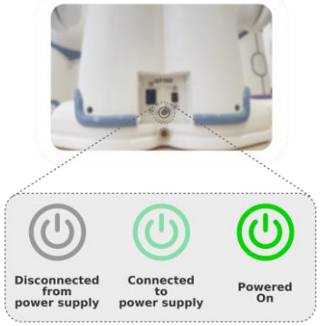
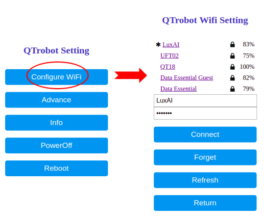
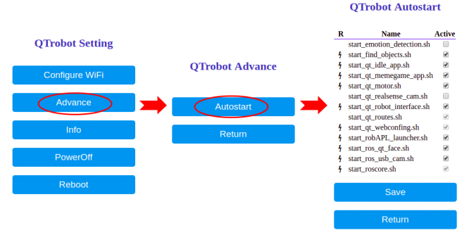

User Manual¶
In the following sections you will find user manual of the QTrobot.
1. What is QTrobot?¶
QTrobot, is a toddler-like humanoid robot built by LuxAI S.A. It is a socially engaging and interactive robot with a wide area of application. QTrobot is currently being used for emotional training of children with autism, post-stroke rehabilitation, elderly cognitive and physical rehabilitation as well as research in the field of human robot interaction.
2. QTrobot Power¶
QTrobot power button has three color states, each indicating the robot current power state:
- LED OFF: robot is disconnected from its main power supply.
- LED with Dim Light: robot is connected to its power supply but is not running.
- LED Fully ON: robot is running.

Power ON¶
To power the robot on, simply connect the robot's power supply1.This triggers the power on process and your robot becomes ready less than a minute. After powering on, you can see the robot face is on and the motors are in their home position. If the robot is off and it is connected to the power supply2 simply push the power button to turn on the robot.
Power OFF¶
To power off the robot, simply press the power button when it is on. You can see that the robot motors move to the parking position and the robot display turns off in less than one minute. The Dim light at the power button indicates that it is safe to disconnect the power supply.
Warning
Avoid turning off the robot by cutting the power supply. This may damage your product.
Methods to power off the QTrobot¶
Apart from using the power button, you can power off the robot in different ways:
Powering off using the robot control panel
- Connect to robot WIFI hotspot
- Access the control panel using
http://qtrrobotorhttp://192.168.100.1in your web browser - Click on "Power off" button
Power off using QTrobot tablet App
- Connect to robot WIFI hotspot
- Open the Tablet App
- Shutdown the robot from the main menu
Power off using developer terminal
- Connect to robot WIFI hotspot
- Login into robot via SSH using provided credentials
- Power the robot off
ssh qtrobot@qtrobot sudo poweroff
3. Connecting to QTrobot WiFi Hotspot¶
QTrobot comes with integrated WIFI interfaces. One of them provide the hotspot to remotely connect to the robot and the other one can be used to connect the robot to public WIF and internet. From your device/PC/tablet, just look for the robot WIFI hotspot SSID and connect to it. The hotspot name is your robot name (e.g. QT100).
4. Connect to QTrobot via ssh¶
Your QTrobot comes with two integrated computers both running Ubuntu 16.04 LTS operating system.
- QTROBOT (ARM Cortex-A53): This is the embedded computer of QTrobot which runs the robot main software such as motors controller, gestures, emotions and implement most of the ROS interfaces. The ROS server is running on this machine.
- QTPC (Intel NUC i5): This is the high-performance computer of the robot which allows you to develop and run your high computational codes. QTPC is connected to QTROBOT via LAN and communicates to all robot modules using ROS. This machine also implements some of the QTrobot ROS interfaces such as 3D camera images.
Accessing QTROBOT via SSH¶
After connecting to the robot WIFI hotspot, open a terminal from your PC and SSH to the robot using 'qtrobot' as hostname or using IP 192.168.100.13.
ssh qtrobot@qtrobot qtrobot@qt password:*******
Accessing QTPC via SSH¶
There are two ways to SSH into QTPC:
- Via QTROBOT: after connecting to robot WIFI hotspot, first SSH to QTRBOT, then from QTROBOT terminal SSH into QTPC.
ssh qtrobot@qtrobot qtrobot@qt password:******* ssh qtpc
- Directly SSH to QTPC: after connecting to robot WIFI hotspot, open a terminal from your PC and ssh to QTPC using
192.168.100.2ssh qtrobot@192.168.100.2 qtrobot@qt password:*******
5. Accessing The Control Panel¶
QTrobot has two web-based control panels one for QTROBOT and the other for QTPCP. These panels facilitate robot configuration such as connecting to the internet or to enable/disable robot startup scripts (see section Robot Autostart Scripts). You can connect separately to each control panel using their corresponding IPs. To connect to the QTROBOT or QTPC web control panel, after connecting to the robot WIFI hotspot:
- For QTROBOT, open a browser and type
http://192.168.100.1:8080orhttp://qtrobot - For QTPC, open a browser and type
http://192.168.100.2:8080 - Log in to the panel using the QTrobot's username and password provided to you.
6. Connecting to a Home Network and Internet¶
You can connect the robot to your home network and internet using the WIFI from QTPC either via terminal or using the control panel of QTPC
Warning
Do not use the QTROBOT WIFI to connect to a network. Instead use WIFI from QTPC!
Connecting to the Internet from Terminal¶
Open a terminal and SSH to QTPC and use 'nmtui' tool:
qtrobot@qtpc:~$ sudo nmtui
Connecting to the Internet from Control panel¶
Connect to the QTPC control panel and navigate to "Configure WIFI". Then simply follow the instructions.

7. Robot Autostart scripts¶
Warning
Assure that you completely understood the purpose of each script and you are aware of what you are doing
What are autostart scripts?¶
Autostart scripts are simply some bash scripts which are executed at robot startup time. These scripts prepare robot network, setup ROS environment, launch QTrobot motor and other controllers, setup log files and etc.
Where are they located?¶
there are two sets of autostart scripts on QTrobot: 1. Autostart scripts on RPI 2. Autostart scripts on NUC
Both sets are located under ~/robot/autostart folder.
How they are executed at startup time?¶
The scripts are run by linux Cron job scheduler. In fact, a specific corn job is configured to run autostart_screens.sh script at linux boot. The other scripts are launched by autostart_screens.sh and their output are redirected to the corresponding log files.

To add your own script (e.g. start_my_script.sh) you can simply add the following line to the autostart_screens.sh:
{
wait_for_network
run_script "start_qtroutes.sh"
...
...
run_script "start_my_script.sh"
} &>> ${LOG_FILE}
How can I access them?¶
You can access them via terminal of NUC/RPI or via QTrobot web interface for enable/disable them:
- Web interface on RPI:
http://192.168.100.1:8080 - Web interface on NUC:
http://192.168.100.2:8080

What are the main autostart scripts?¶
As I explained above, there are some important scripts which prepare the robot network, ROS environment and launch the motor controller and other robot interfaces. All of these scripts are running on RPI and are necessary for functionality of QTrobot.
Here are the main startup scripts on RPI:¶
start_qt_routes.sh: prepares network routing between RPI and NUC for internet sharing and etc.start_roscore.sh: launchesroscorestart_qtpc.sh: power on NUC via wake-on-lan.start_qt_motor.sh: launchqt_motornode including motor and gesture controllers.start_qt_robot_interface.sh: launchqt_robot_interfacenode which implements QTrobot emotion (face), audio, speech, behavior and other interfaces.start_qt_webconfing.sh: launch QTrobot web config interface on RPI
Here are the main startup scripts on NUC:¶
The NUC pc is most convenient place to develop code and run your own autostart scripts and apps.
Most of the default scripts are simply running the QTrobot open source demos and examples and can be safely disabled and/or modified. There is nothing especial running by autostart scripts on NUC except:
- start_qt_nuitrack_app.sh: which run Nuitrack skeleton tracking and camera interfaces.
- start_qt_webconfing.sh: launch QTrobot web config interface on NUC
Where are the log files?¶
All programs/ROS nodes which are run by QTrobot autostart scripts redirect their standard output (info/war/error messages) to their corresponding log file. These log files can be found under ~/robot/autostart/logs folder.
8. Working directly on QTPC¶
Your robot has a standard Ubuntu-based PC. You can use QTPC in the same way you use a standard desktop. That greatly facilitates and accelerates your development cycle as you have a full-featured desktop directly with your QTrobot. To do that:
- Connect a USB-C extension (or USB-C to HDMI cable) to the USB-C port of QTrobot.
- Connect your mouse and keyboard to your USB-C extension. Alternatively you can use weirless mouse/keyboard and connect the dongle directly to USB3 port of QTrobot.
- Connect the HDMI cable of your display to the USB-C extension or use a USB-C to HDMI cable.
- You will see Ubuntu desktop running
Notice
You may need to connect the HDMI cable before powering up the robot to make QTPC aware of any external display.
9. QTrobot ROS API¶
The QTrobot (LuxAI) interface aims to facilitate accessing basic robot functionalities leveraging a set of user-friendly ROS interfaces. Each robot’s functionality can be accessed in blocking and non-blocking mode using ROS publish/subscribe and Service/Client interfaces.
Info
Visit QTrobot ROS wiki for ROS API
Demos & Examples
Please check our Demos and Examples to check how to use and implement QTrobot interfaces
10. Calling QTrobot APIs¶
You can access each robot's functionality via its publish/subscribe or service/client interfaces. For example, to use the robot 'Speech' functionality from terminal using ROS publisher, you can try:
rostopic pub /qt_robot/speech/say std_msgs/String "data: 'Hello!'"
rosservice call /qt_robot/speech/say "message: 'Hello!'"
import rospy from std_msgs.msg import String # create a publisher pub = rospy.Publisher('/qt_robot/speech/say', String, queue_size=10) # publish a text message to TTS (non-blocking) pub.publish("Hello! I am QT!")
-
Only use the provided power supply with your robot. ↩
-
In this case you can notice a dim light on the power button. ↩
-
Windows users can use Putty (www.putty.org) ↩